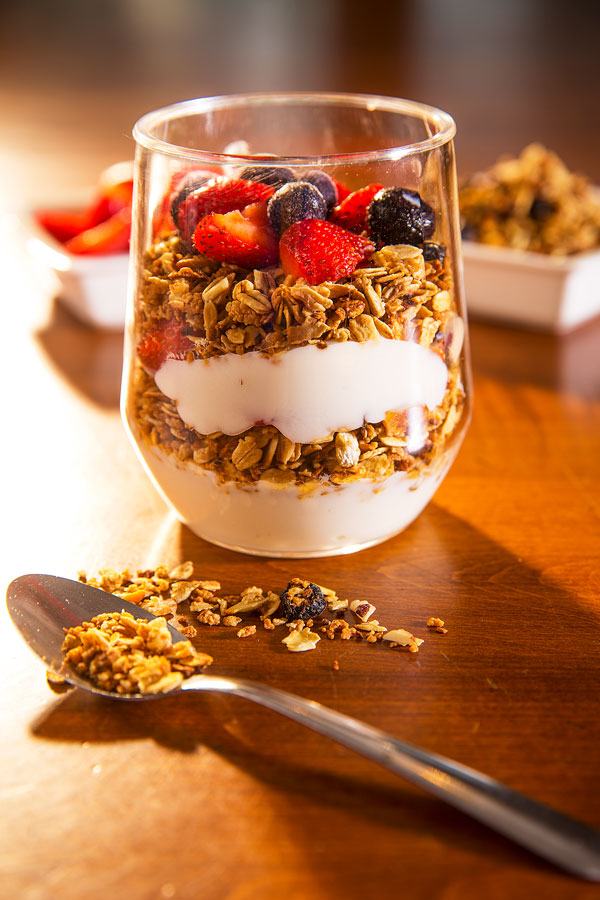

Parfait

A Parfait is a sweet dessert made of layered ingredients in a tall glass
It is a simple French breakfast or desssert which is healthy as well as mouth-watering.
It starts with a thick layer of creamy yoghurt, layered with home made granola and topped wit fresh fruit.
| Yield: |
Prep Time: |
| 4 Serving |
5 minutes |
Ingredients
- 3 cups of Vanila non-fat yoghurt
- 1 cup fresh strawberries
- 1 pint fresh blackberries or blueberries
- 1 cup of granola
Steps
- Layer 1/3 cup of vanilia into the bottom of each of the 4 tall glasses
- Combine fresh strawberries with blueberries
- Alternate layers of fruit and granola with yogurt until glasses are filled to the top.
- Serve Parfaits immediately to keep granola crunchy